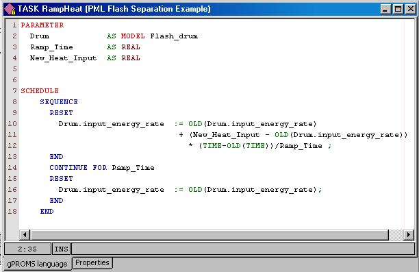

A Task is defined by three sections: Task Parameter declarations, (optional) Task Variable declarations and a Schedule where the Task's operating procedure is expressed in terms of the Task Parameters and Variables.
Overall, the structure of a Task definition is the following:
PARAMETER ... Parameter declarations ... VARIABLE ... Local Variable declarations ... SCHEDULE ... Schedule declaration ...
Task Parameters may be of any of the following types:
INTEGER, REAL or LOGICAL constants. These are used to Parameterise a Task with respect to, for instance, controller tuning Parameters, event durations etc.
INTEGER_EXPRESSION, REAL_EXPRESSION or LOGICAL_EXPRESSION. These are used to parameterise a Task with respect to, for instance, logical conditions for the conditional and iterative structures etc.
Model. These are used to parameterise a Task with respect to the actual Models on which it acts.
The purpose of Parameters in a Task is to defines the number and type of arguments that a Task accepts as arguments and enables one to write generic reusable tasks. All Task Parameters must be given a value whenever the Task is invoked.
Task Variables are the equivalent of local subroutine Variables and as such are calculated by the Task. They should not be confused with Model Variables and are NOT associated with Variable Types instead they are declared to be of type INTEGER or REAL.
The Schedule section defines the part of the operating procedure implemented by the Task. It is similar to the Schedule section in Processes, the only difference being that it has access to the local Variables declared in the Variable section. The values of the latter can be manipulated by using assignment statements.

An example Task used to define change in heat input to the Flash drum Model from the gPROMS Process Model Library